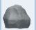
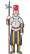
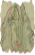
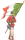

STORIA di MALNATE
Profilo Storico e Geologico della Citta di Malnate
Questo documento d'archivio traccia l'evoluzione del territorio malnatese dalle sue origini preistoriche e geologiche fino al riconoscimento contemporaneo come Città, integrando reperti archeologici, mutamenti territoriali e vicende storiche.
Inquadramento Geografico e Origini Geologiche
Il territorio sorge nella porzione collinare di Varese, caratterizzato da terrazzi alluvionali posti sulle sponde sinistre del torrente Lanza e del fiume Olona.
-
🐚
L'antico fiordo marino: Prima dell'epoca quaternaria, l'altopiano si affacciava su un profondo fiordo sottomarino generato da canyon fluviali. Di questa era rimane un fossile unico ed esclusivo del territorio: la conchiglia Emiliomya malnatensis.
-
⚒️
La pietra molera e la puddinga: La collina si è formata nel Miocene ed è costituita da puddinga (conglomerato di ciottoli). Nella Valle del Lanza si è depositata una particolare formazione arenacea micacea, formatasi 25 milioni di anni fa e nota come pietra molera, storicamente estratta per l'edilizia e per le macine dei mulini.
-
🦬
Le glaciazioni e il fossile di bisonte: Durante le glaciazioni, il clima locale era simile alla tundra polare. Nel 1959, in una cava di sabbia del paese, vennero portate alla luce le ossa fossili di un enorme bisonte antico (alto oltre due metri), probabilmente travolto da una piena preistorica del fiume.
-
🥀
I terreni a Baraggia: Alla glaciazione di Mindel risalgono i terreni ricoperti da Löss (terriccio sabbioso-argilloso), scarsamente coltivabili, che hanno dato origine al toponimo locale di baraggie.
Origini del Nome ed Etimologia
Il nome della città presenta una duplice interpretazione tra storicità e tradizione orale.
-
👑
La leggenda longobarda: La tradizione popolare lega il nome a un'esclamazione della regina Teodolinda, che avrebbe definito malnati (furfanti) gli abitanti, oppure avrebbe descritto come mal-a-nà (malandare) il difficile passaggio del suo corteo stradale coperto di ramaglie.
-

L'ipotesi etimologica celtica: Scientificamente, il prefisso Malna- deriva con molta probabilità da marna (la roccia argillosa ampiamente presente in zona), mentre il suffisso -ate indica il termine celtico contrada. L'unione definisce il significato di Contrada della Marna.
-
📜
Le prime attestazioni scritte: Il toponimo è storicamente documentato a partire dall'XI secolo, comparendo prima come Melnate e, dal 1089, nella forma definitiva di Malnate. Nella mappa vaticana del 1581 appare storpiato in Malindo.
Dalla Preistoria all'Epoca Romana
Le prime tracce di insediamenti stabili testimoniano la presenza di comunità strutturate già molti secoli prima di Cristo.
-

Il villaggio celtico di Monte Morone: Tra il IV e il III secolo a.C., la zona di Monte Morone ospitò un villaggio popolato dai Galli Insubri, guerrieri organizzati in una società tribale gerarchica.
-

I reperti archeologici di Rogoredo: Nel 1903 vennero scoperte in località Rogoredo due antiche tombe celtiche a incinerazione. Quella maschile custodiva una rara spada antropoide, caratterizzata da un'ansa a forma umana. A Monte Morone si conserva inoltre una pietra rituale con incisioni a coppelle.
-

La dominazione romana: Le testimonianze romane includono la pianta ortogonale del centro storico e alcuni frammenti di tegole ritrovati negli anni Trenta a Monte Morone.
-

Il sistema difensivo del castelasc: Nel IV secolo d.C., per contrastare le invasioni barbariche, Roma edificò una linea di fortificazioni subalpine. A Malnate sorse un presidio militare sopraelevato per controllare la valle del Lanza, chiamato localmente castelasc, di cui rimangono una cisterna interrata e la base della torre, successivamente riadattata a campanile della chiesa di Monte Morone.
Il Medioevo e il Feudalesimo
-
👸
L'epoca longobarda: A partire dal VI secolo d.C., il territorio passò sotto il controllo dei Longobardi. In seguito alla conversione dall'arianesimo promossa dalla regina Teodolinda, sorsero numerosi edifici religiosi dedicati a Maria, tra cui la chiesetta di Monte Morone, intitolata alla Madonna della Cintola in segno di protezione della fortezza.
-
🦅
Il passaggio ai Franchi: Nel IX secolo i Longobardi vennero sottomessi dai Franchi, integrando la zona nel Sacro Romano Impero.
-
🗞
La nascita del Comune: Documenti storici indicano che Malnate era già organizzata in forma di Comune rurale intorno al 1100. La primissima menzione scritta in un atto ufficiale risale a un contratto di vendita del 1132. Nel 1141 il borgo era già dotato di un proprio sistema pubblico di pesi, strade e botteghe.
-
🕍
Il legame con il Monastero di Ganna: Nel Medioevo, il Monastero di San Gemolo di Ganna deteneva vaste proprietà nel territorio malnatese (tra cui la Possessione granda e il nucleo di Rovera), cedute nel 1556 all'Ospedale Maggiore di Milano.
Dal Ducato di Milano al Risorgimento
-
🗣️
L'amministrazione dei capifamiglia: Dal 1395 Malnate entrò a far parte del Ducato di Milano. Il paese era gestito da consoli e sindaci, ma le decisioni principali venivano prese dall'assemblea dei capi famiglia, convocata in piazza dal suono della campana.
-

Il passaggio dei soldati svizzeri: Nel 1511 la zona subì gravi danneggiamenti e saccheggi da parte delle truppe svizzere del cardinale Matteo Schiner, che si erano acquartierate a Monte Morone prima della storica battaglia di Marignano.
-

Il Catasto Teresiano (1760): Sotto la dominazione austriaca, l'attivazione del Catasto nel 1760 portò a un'importante riforma amministrativa. A Malnate vennero aggregati il Comune rurale di San Salvatore e il comunetto di Monte Morone, assumendo la denominazione ufficiale di Comune di Malnate con Monte Morone e San Salvatore.
-

Le Guerre d'Indipendenza: Il 26 maggio 1859, le località della Folla e di San Salvatore divennero il teatro cruento della Battaglia di Varese, dove i Cacciatori delle Alpi di Giuseppe Garibaldi sconfissero le truppe austriache del generale Urban.
Epoca Moderna e Contemporanea
-
Le grandi opere infrastrutturali: Tra il 1883 e il 1885 venne costruito l'imponente Ponte di Ferro per collegare la linea ferroviaria verso Varese. Nel 1928 la struttura metallica fu sostituita dall'attuale e monumentale viadotto in calcestruzzo, che occupa una posizione centrale nello stemma del Comune.
-
La nascita della Provincia di Varese: Con la riforma dei confini del 1927, Malnate si staccò dalla provincia di Como per entrare nella neonata provincia di Varese. Nello stesso anno, il regio decreto soppresse il limitrofo Comune di Gurone, accorpandolo definitivamente a Malnate a partire dal 4 gennaio 1928.
-
Il riconoscimento a Città: Dopo aver superato i 16.500 abitanti suddivisi nelle storiche frazioni (San Salvatore, Gurone, Folla e Rovera), il 20 gennaio 2016 il Presidente della Repubblica ha conferito ufficialmente a Malnate il titolo onorifico di Città.